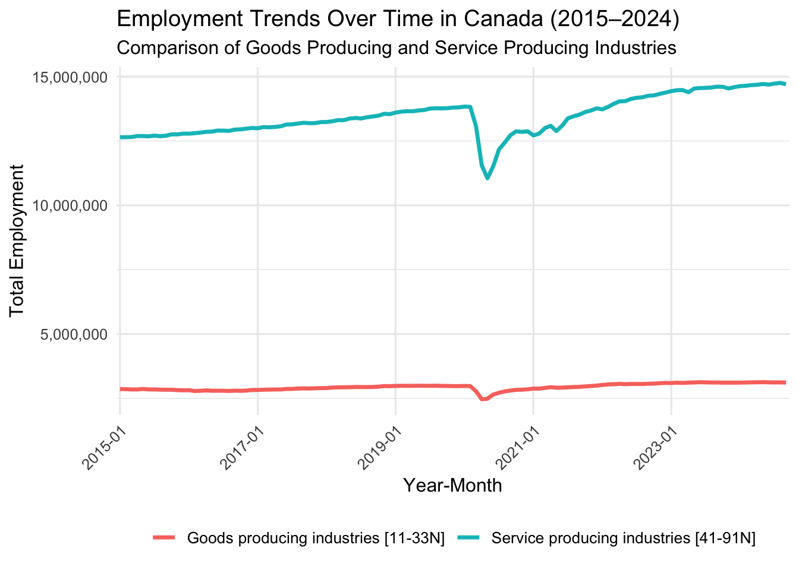
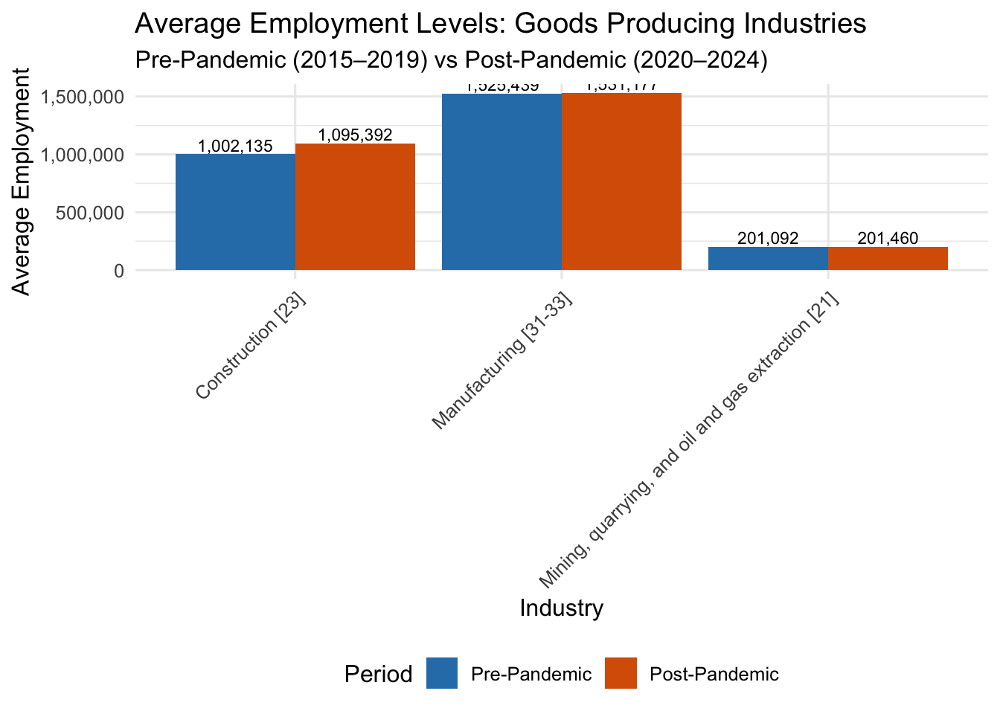
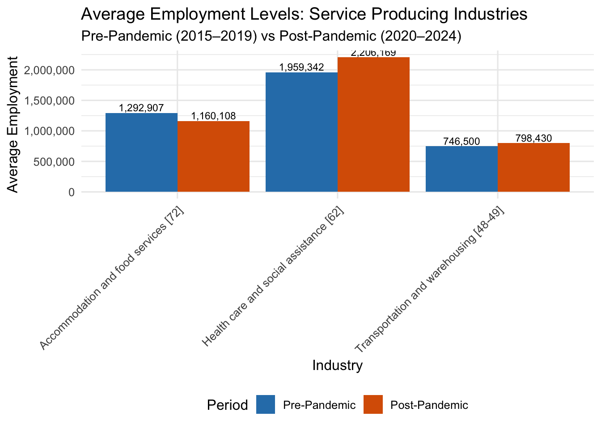

| Period | Industry | Avg_Employment | Min_Employment | Max_Employment | SD_Employment |
|---|---|---|---|---|---|
| Post-Pandemic | Accommodation and food services [72] | 1160107.53 | 577970 | 1346479 | 187254.2883 |
| Pre-Pandemic | Accommodation and food services [72] | 1292906.52 | 1218786 | 1350618 | 38986.3733 |
| Post-Pandemic | Administrative and support, waste management and remediation services [56] | 811167.16 | 682133 | 846899 | 37311.5483 |
| Pre-Pandemic | Administrative and support, waste management and remediation services [56] | 811587.47 | 780681 | 854291 | 21932.5953 |
| Post-Pandemic | Arts, entertainment and recreation [71] | 268300.56 | 135411 | 321041 | 52769.7755 |
| Pre-Pandemic | Arts, entertainment and recreation [71] | 290120.57 | 255180 | 310395 | 15412.3895 |
| Post-Pandemic | Construction [23] | 1095392.33 | 808909 | 1180205 | 87422.6247 |
| Pre-Pandemic | Construction [23] | 1002135.45 | 963264 | 1047179 | 27493.7537 |
| Post-Pandemic | Durable goods [321N] | 899375.68 | 761649 | 927547 | 35294.5389 |
| Pre-Pandemic | Durable goods [321N] | 901419.38 | 870195 | 940187 | 22499.3773 |
| Post-Pandemic | Educational services [61] | 1377049.19 | 1155025 | 1494761 | 76023.7852 |
| Pre-Pandemic | Educational services [61] | 1287770.20 | 1223023 | 1371031 | 45526.9330 |
| Post-Pandemic | Finance and insurance [52] | 795842.81 | 720500 | 851658 | 44045.9381 |
| Pre-Pandemic | Finance and insurance [52] | 728550.67 | 705439 | 755886 | 13571.8557 |
| Post-Pandemic | Forestry, logging and support [11N] | 37376.04 | 31917 | 39676 | 1336.1929 |
| Pre-Pandemic | Forestry, logging and support [11N] | 39510.77 | 36995 | 41246 | 892.4464 |
| Post-Pandemic | Goods producing industries [11-33N] | 2994051.18 | 2468268 | 3132774 | 156344.0892 |
| Pre-Pandemic | Goods producing industries [11-33N] | 2889377.18 | 2787853 | 2994154 | 69699.4651 |
| Post-Pandemic | Health care and social assistance [62] | 2206168.75 | 1847387 | 2402880 | 127551.9088 |
| Pre-Pandemic | Health care and social assistance [62] | 1959342.03 | 1815967 | 2105036 | 85755.9525 |
| Post-Pandemic | Industrial aggregate excluding unclassified businesses [11-91N] | 16777747.58 | 13542230 | 17877140 | 1067908.2714 |
| Pre-Pandemic | Industrial aggregate excluding unclassified businesses [11-91N] | 16054002.12 | 15502098 | 16782972 | 434830.4838 |
| Post-Pandemic | Industrial aggregate including unclassified businesses [00-91N] | 17097086.91 | 13763494 | 18235386 | 1105778.6929 |
| Pre-Pandemic | Industrial aggregate including unclassified businesses [00-91N] | 16354899.28 | 15741102 | 17080706 | 448688.3747 |
| Post-Pandemic | Information and cultural industries [51] | 356610.19 | 303532 | 385633 | 18542.7864 |
| Pre-Pandemic | Information and cultural industries [51] | 353951.73 | 347673 | 365359 | 4199.9955 |
| Post-Pandemic | Management of companies and enterprises [55] | 119161.30 | 103786 | 127256 | 5644.2527 |
| Pre-Pandemic | Management of companies and enterprises [55] | 101483.28 | 95311 | 111611 | 4774.8167 |
| Post-Pandemic | Manufacturing [31-33] | 1531177.25 | 1316947 | 1573407 | 55408.6309 |
| Pre-Pandemic | Manufacturing [31-33] | 1525439.32 | 1474398 | 1588677 | 37120.8040 |
| Post-Pandemic | Mining, quarrying, and oil and gas extraction [21] | 201459.96 | 176080 | 214611 | 12008.0659 |
| Pre-Pandemic | Mining, quarrying, and oil and gas extraction [21] | 201091.70 | 185828 | 229447 | 8556.8037 |
| Post-Pandemic | Non-durable goods [311N] | 631801.60 | 553203 | 650846 | 20421.9134 |
| Pre-Pandemic | Non-durable goods [311N] | 624020.00 | 601445 | 648911 | 15162.6182 |
| Post-Pandemic | Other services (except public administration) [81] | 526971.12 | 373197 | 577077 | 46884.6499 |
| Pre-Pandemic | Other services (except public administration) [81] | 545804.83 | 533860 | 558480 | 7311.8118 |
| Post-Pandemic | Professional, scientific and technical services [54] | 1116731.12 | 899411 | 1228677 | 108938.8128 |
| Pre-Pandemic | Professional, scientific and technical services [54] | 902653.02 | 852702 | 989475 | 45813.7403 |
| Post-Pandemic | Public administration [91] | 1211884.46 | 1056139 | 1318532 | 72902.2442 |
| Pre-Pandemic | Public administration [91] | 1091862.18 | 1038599 | 1152625 | 37834.5857 |
| Post-Pandemic | Real estate and rental and leasing [53] | 275582.30 | 222834 | 294771 | 19604.4151 |
| Pre-Pandemic | Real estate and rental and leasing [53] | 293493.13 | 285301 | 300193 | 3535.1065 |
| Post-Pandemic | Retail trade [44-45] | 1954637.07 | 1542181 | 2026557 | 100060.3070 |
| Pre-Pandemic | Retail trade [44-45] | 1961596.85 | 1924183 | 2008232 | 23409.9014 |
| Post-Pandemic | Service producing industries [41-91N] | 13783696.44 | 11052028 | 14754122 | 915031.5876 |
| Pre-Pandemic | Service producing industries [41-91N] | 13164624.97 | 12645274 | 13803575 | 370684.2252 |
| Post-Pandemic | Trade [41-45N] | 2759689.39 | 2257354 | 2850268 | 124630.1093 |
| Pre-Pandemic | Trade [41-45N] | 2758599.27 | 2712085 | 2833921 | 38618.6929 |
| Post-Pandemic | Transportation and warehousing [48-49] | 798430.47 | 686470 | 850482 | 43185.5522 |
| Pre-Pandemic | Transportation and warehousing [48-49] | 746500.03 | 717961 | 795365 | 23103.8753 |
| Post-Pandemic | Utilities [22] | 128645.54 | 121200 | 135371 | 4579.6034 |
| Pre-Pandemic | Utilities [22] | 121199.83 | 113971 | 128265 | 4498.5227 |
| Post-Pandemic | Wholesale trade [41] | 805052.35 | 715173 | 827992 | 25656.9936 |
| Pre-Pandemic | Wholesale trade [41] | 797002.33 | 775373 | 826134 | 16999.4969 |
Employment Trends Analysis in Canada: 2015-2019 vs. 2020-2024
Introduction
Employment trends are a key indicator of economic performance and recovery, particularly during periods of disruption. In this report, we analyze how employment in Canada has evolved over two distinct periods: the pre-pandemic years (2015–2019) and the post-pandemic years (2020–2024). The goal is to identify changes in employment trends across industries and regions, using data spanning from 2015 to 2024. In this study, we will be researching the questions: How were employment trends in the major industries in Canada affected by the COVID-19 pandemic? We will look at different factors of this data and compare employment levels across different industries and geographical regions. We will group these industries into two different groups: Goods producing industries and service producing industries. The goods producing industries are made up of Construction, Manufacturing, and Mining, and the service producing industries are made up of Accommodation and food services, Healthcare, and Transportation and warehousing.
Provenance
We found our data on Kaggle, and it is sourced from the Survey of Employment, Payrolls, and Hours. This data was collected to provide information about employment levels and includes variables such as geographical region, industry, and employment level. Each case is represented by the employment of a specific industry in a specific geographic region for a given month and year.
Literature Review
Employment trends have been extensively studied, especially during periods of economic recovery following major events like the COVID-19 pandemic. Studies have identified regional and industry-specific disparities in employment recovery post-pandemic. For instance, service-based industries often experience slower recovery compared to technology-driven sectors. This section will explore relevant literature on employment trends in Canada and similar economies, emphasizing regional and industrial differences.
The COVID-19 Pandemic had a drastic effect on the Canadian economy and labor market, causing changes in employment levels. The article from StatCan (2022) mentions that between January 2020 and May 2020, Canada saw roughly 3.4 million jobs lost (nearly 20% of employment). RBC (2022) highlights the change in employment across different sectors, and how employment seemed to rise post pandemic in low contact industries, such as finance, but fell in high contact industries, such as accommodation and food services. Environics Analytics (2021) goes into detail on how population growth decreased across regions in 2020, as compared to the growth it experienced in 2018 and 2019. It also mentions an overall decline in mental health amongst Canadians, illustrating the fact that COVID had great impacts in Canada beyond just employment.
Methodology
We use a publicly available dataset covering monthly employment data from 2015 to 2024. The dataset includes fields for regions, industries, and employment numbers. Data were filtered to include only the years of interest (2015–2024) and were classified into two periods: Pre-Pandemic (2015–2019) and Post-Pandemic (2020–2024).
Statistical analysis and visualizations are used to identify trends and significant differences between these periods.
Our main goal is to investigate employment trends across major industry sectors in Canada and how they were affected by COVID-19. Through statistical analysis and data visualization, we will see how employment level was affected by the pandemic, and how different industries rebounded from the pandemic. We will look at factors such as geographic region to compare these trends across different regions in Canada.
Data Exploration
This five number summary table includes key statistics regarding the employment level across different industries both before and after the COVID-19 pandemic and it provides us with an idea of the employment distribution across. The industry “Industrial aggregate including unclassified businesses” groups all the industries together and provides us with insight to the employment of Canada as a whole. The data from the aggregate grouping of industries allows us to compare individual industries to the total employment in Canada, and it sets a baseline for comparing these industries with each other.
We will also use this summary table to get a basis for the major industries we will be researching: Goods producing industries (Construction, Manufacturing, and Mining) and service producing industries (Accommodation and food services, Healthcare, and Transportation and warehousing).
Visualization: Employment Trends Over Time

<<<<<<< HEAD ## Visualization: Employment Comparison Pre- vs Post-Pandemic =======
Visualization: Employment Comparison Pre- vs Post-Pandemic
f226ddc8cc92580f0b5e77e5af8ebfb8e967d8aa


Results
Conclusion
# Load required libraries
library(tidyverse)
library(knitr)
library(kableExtra)
library(ggplot2)
employment_trends <- read.csv("~/Desktop/Stat 184/employment_trends.csv")
employment_trends_clean <- employment_trends %>%
filter(REF_DATE >= "2015-01" & REF_DATE <= "2024-12",
UOM != "Dollars") %>%
mutate(
REF_DATE = as.character(REF_DATE),
Employment = replace_na(VALUE, 0),
Period = ifelse(REF_DATE < "2020-01", "Pre-Pandemic", "Post-Pandemic")
) %>%
select(-c(DGUID, SYMBOL, TERMINATED, SCALAR_FACTOR, SCALAR_ID, STATUS, DECIMALS, Estimate, VECTOR, COORDINATE, UOM_ID)) %>%
rename(
Industry = North.American.Industry.Classification.System..NAICS.,
Region = GEO,
Date = REF_DATE
)
write.csv(employment_trends_clean, "employment_trends_clean.csv", row.names = FALSE)
post_pandemic_employment_trends <- employment_trends_clean %>%
filter(Date >= "2020-01" & Date <= "2024-12")
pre_pandemic_employment_trends <- employment_trends_clean %>%
filter(Date >= "2015-01" & Date <= "2019-12")
# Set global options
knitr::opts_chunk$set(echo = TRUE, warning = FALSE, message = FALSE, fig.align = "center")
summary_stats <- employment_trends_clean %>%
filter(Region == "Canada") %>%
group_by(Period, Industry) %>%
summarise(
Avg_Employment = mean(Employment, na.rm = TRUE),
Min_Employment = min(Employment, na.rm = TRUE),
Max_Employment = max(Employment, na.rm = TRUE),
SD_Employment = sd(Employment, na.rm = TRUE)
) %>%
arrange(Industry, Period)
kable(summary_stats, caption = "Summary Statistics for Employment Trends in Canada") %>%
kable_styling(bootstrap_options = c("striped", "hover"), full_width = FALSE) %>%
scroll_box(height = "500px")
filtered_data_canada <- employment_trends_clean %>%
filter(
Region == "Canada",
Industry %in% c("Goods producing industries [11-33N]",
"Service producing industries [41-91N]")
)
industry_trends_canada <- filtered_data_canada %>%
group_by(Date, Industry) %>%
summarise(Total_Employment = sum(Employment, na.rm = TRUE)) %>%
ungroup()
ggplot(industry_trends_canada, aes(x = Date, y = Total_Employment, color = Industry, group = Industry)) +
geom_line(size = 1.2) +
labs(
title = "Employment Trends Over Time in Canada (2015–2024)",
subtitle = "Comparison of Goods Producing and Service Producing Industries",
x = "Year-Month",
y = "Total Employment",
color = "Industry"
) +
theme_minimal(base_size = 12) +
theme(
axis.text.x = element_text(angle = 45, hjust = 1),
legend.position = "bottom",
legend.title = element_blank(),
legend.text = element_text(size = 10)
) +
scale_x_discrete(
breaks = c("2015-01", "2017-01", "2019-01", "2021-01", "2023-01")
) +
scale_y_continuous(labels = scales::comma)
#goods_industries
goods_industries <- c("Manufacturing [31-33]",
"Construction [23]",
"Mining, quarrying, and oil and gas extraction [21]")
goods_data <- employment_trends_clean %>%
filter(
Industry %in% goods_industries,
Region == "Canada"
)
goods_summary <- goods_data %>%
group_by(Industry, Period) %>%
summarise(Average_Employment = mean(Employment, na.rm = TRUE)) %>%
ungroup()
goods_summary <- goods_summary %>%
mutate(Period = factor(Period, levels = c("Pre-Pandemic", "Post-Pandemic")))
ggplot(goods_summary, aes(x = Industry, y = Average_Employment, fill = Period)) +
geom_bar(stat = "identity", position = position_dodge()) +
geom_text(aes(label = scales::comma(round(Average_Employment, 0))),
position = position_dodge(width = 0.9),
vjust = -0.25, size = 3) +
labs(
title = "Average Employment Levels: Goods Producing Industries",
subtitle = "Pre-Pandemic (2015–2019) vs Post-Pandemic (2020–2024)",
x = "Industry",
y = "Average Employment"
) +
theme_minimal(base_size = 12) +
theme(
axis.text.x = element_text(angle = 45, hjust = 1),
legend.position = "bottom"
) +
scale_fill_manual(values = c("Pre-Pandemic" = "#2C7FB8", "Post-Pandemic" = "#D95F02")) +
scale_y_continuous(labels = scales::comma)
#service_industries
service_industries <- c("Health care and social assistance [62]",
"Accommodation and food services [72]",
"Transportation and warehousing [48-49]")
service_data <- employment_trends_clean %>%
filter(
Industry %in% service_industries,
Region == "Canada"
)
service_summary <- service_data %>%
group_by(Industry, Period) %>%
summarise(Average_Employment = mean(Employment, na.rm = TRUE)) %>%
ungroup()
service_summary <- service_summary %>%
mutate(Period = factor(Period, levels = c("Pre-Pandemic", "Post-Pandemic")))
ggplot(service_summary, aes(x = Industry, y = Average_Employment, fill = Period)) +
geom_bar(stat = "identity", position = position_dodge()) +
geom_text(aes(label = scales::comma(round(Average_Employment, 0))),
position = position_dodge(width = 0.9),
vjust = -0.25, size = 3) +
labs(
title = "Average Employment Levels: Service Producing Industries",
subtitle = "Pre-Pandemic (2015–2019) vs Post-Pandemic (2020–2024)",
x = "Industry",
y = "Average Employment"
) +
theme_minimal(base_size = 12) +
theme(
axis.text.x = element_text(angle = 45, hjust = 1),
legend.position = "bottom"
) +
scale_fill_manual(values = c("Pre-Pandemic" = "#2C7FB8", "Post-Pandemic" = "#D95F02")) +
scale_y_continuous(labels = scales::comma)